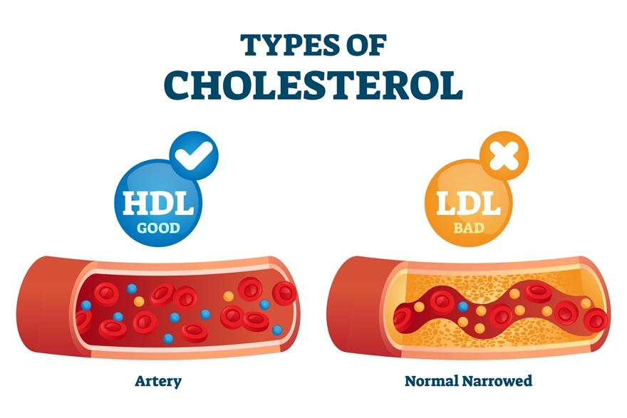

Evolocumab is a medicine used to lower low-density lipoprotein, or LDL, in the blood. LDL is sometimes called “bad cholesterol.” It collects on the walls of your arteries and lowers blood flow and oxygen to your heart, brain, and other parts of your body. This can lead to heart attack and stroke.

Evolocumab works by helping the liver remove LDL from the bloodstream. It is for people with heart disease or those who need extra help when other cholesterol medicines are not enough. It can also be used for a genetic type of high cholesterol. It lowers the risk of heart attack, stroke, and more.
People who take this medicine still need to make diet changes to lower their cholesterol. They also often take other medicines for the heart.
This medicine is a liquid that comes in different devices that make it easier to inject. Your care team will help you decide which one is best for you.
The common brand name for this drug is Repatha®.
Latex allergy: Tell your care team if you have allergies to latex or any part of the injection.
Pregnancy and breastfeeding: Tell your care team if you are pregnant, planning to become pregnant, or breastfeeding.
Other medicines: Tell your care team about any medicines you take. Include prescription and over-the-counter medicines, herbs, and supplements.
Always follow your care team’s instructions on how to take your medicine. Ask them to explain anything you do not understand. Do not use more or less of this medicine or use it more often or for a longer period of time than prescribed by your care team.
Always use the form your care team prescribed. Ask them or your pharmacist to show you how to use your device the first time. Each device comes with a guide.
Prefilled syringe: You press the plunger to inject the medicine.
Auto-injector, called SureClick®: You press it down on your skin until it clicks and hold it in place until done.
Injection sites: Common spots are the front of your thigh or your belly, avoiding the belly button. You can also inject in the outer upper arm if someone else is helping. Change the site each time. Do not inject into skin that is red, bruised, tender, hard, or scarred.
Let it warm: Take it out of the fridge and let it sit at room temperature for at least 30 minutes before using. Do not heat it in a microwave or hot water.
Check the medicine: Look through the window. Do not use the medicine if it is cloudy, discolored, or has anything floating in it.
Do not shake: Shaking can damage the medicine.
Pain, redness, or swelling where the shot was given
Cold or flu-like symptoms, such as a runny nose or sore throat
Back pain or joint pain
Itching or rash
If you have severe symptoms, get help right away. Serious side effects from this medicine may include:
Chest tightness or trouble breathing
Swelling in the face or mouth
Fainting or feeling very weak
Rarely, you may have a dangerous allergic reaction. Signs of a severe reaction include trouble breathing, dizziness, stomach pain, a sudden full-body rash, or swelling of the face, lips, tongue, and throat.
Storage: Store the medicine in the refrigerator until ready to use. Do not freeze or shake. Keep it out of the reach of children and pets.
Disposal: Use a sharps container for used pens or syringes. Do not throw needles in the trash. Do not reuse needles. You should take all the medicine as your care team instructs. If your prescription is changed, do not flush unused medicine down the toilet. Dispose of medicines in a way that prevents pets, children, and others from consuming them. It is best to use a medicine take-back program. Ask your pharmacy about programs in your community.
Ask your care team how to handle a missed injection. It will depend on how much time passes between injections. Do not take two doses at once.
If you or someone else takes too much of this medicine, call Poison Control at 1-800-222-1222. Be ready to tell or show what was taken, how much, and when it happened.
If the person has trouble breathing, has a seizure, or cannot wake up, call 911 or go to the Emergency Room right away.
Call your care team if you have:
A fever of 103°F or 39.4°C or higher for an adult that lasts more than 72 hours and does not go away with medicine
Redness, pain, swelling, or warmth at the injection site that gets worse or does not improve.
Unusual tiredness or weakness that is not getting better
Nausea or vomiting that will not stop
New or worsening back pain, muscle aches, or joint pain
Pain when urinating, needing to urinate more often, or blood in the urine
Any rash, hives, or itching that bothers you but is not severe
Any questions or concerns about your symptoms or the injection
Get help right away if you have:
Trouble breathing, shortness of breath, wheezing, or chest tightness
Severe allergic reaction with hives, itching, or large swelling on your face, eyelids, lips, tongue, or throat
Trouble swallowing or throat tightness
Dizziness, feeling faint, or loss of consciousness
Sudden and severe headache, confusion, or vision changes
If you are not sure if your symptoms are serious, it is safest to get help right away.
Thank you for trusting us with your care. We are here to support you and want you to feel your best. Contact us with any questions.
IF YOU HAVE A MEDICAL EMERGENCY, CALL 911 OR GO TO THE EMERGENCY ROOM.
The information presented is intended for general information and educational purposes. It is not intended to replace the advice of your health care provider. Contact your health care provider if you believe you have a health problem.
Last updated May 2025
© 2025 Mytonomy, Inc. All rights reserved.